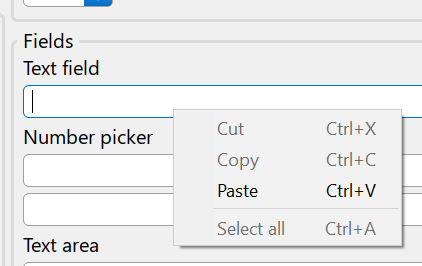
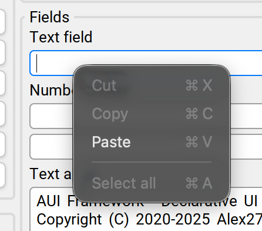
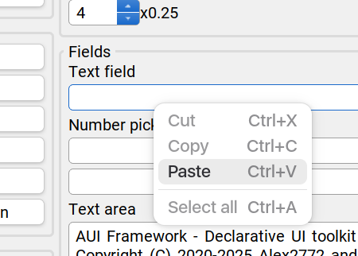
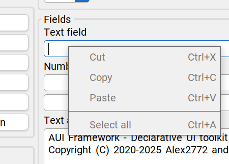

AMenu#
Popup (context) menu.
| Header: | #include <AUI/Action/AMenu.h> |
| CMake: | aui_link(my_target PUBLIC aui::views) |
Detailed Description#
A menu is described with a model - a vector of AMenuItem structures with a name, an optional shortcut hint,
and an onAction handler.
The most common way to show a menu is to override AView::composeContextMenu; it is called when the user right
clicks the view (or long presses it on touchscreens). Return an empty model to show nothing.
class MyView : public AView {
protected:
AMenuModel composeContextMenu() override {
return {
{ .name = "Copy", .shortcut = AInput::CMD_CTRL + AInput::C, .onAction = [this] { copy(); } },
{ .type = AMenu::SEPARATOR },
{ .name = "Disabled", .enabled = false },
};
}
};
To show a menu on your own, call AMenu::show(model). Menus are closed with AMenu::close(); AMenu::isOpen()
tells whether there's an open menu.
Appearance#
Menus are rendered by the platform, so they look native.
| Platform | Implementation | Example |
|---|---|---|
| Windows | HMENU (TrackPopupMenuEx) |
 |
| macOS | NSMenu |
 |
| Linux (GTK4, GNOME) | GtkPopoverMenu |
 |
AMenu::setUseSystemMenus(false) |
AUI-drawn menu |  |
Note
The final look of the menu depends on the OS version and, on Linux, on the desktop environment (and its theme). The screenshots above are examples and may differ from what your users see.
Note
shortcut is a text hint only; AUI does not register it as a global hotkey. Handle the keys yourself, see
Handling input events.
Public Types#
Type#
enum AMenu::Type
Menu item type.
| Constant | Description |
|---|---|
Type::SINGLE
|
|
Type::SUBLIST
|
|
Type::SEPARATOR
|
Public Methods#
close#
Closes the currently open menu, if any.
Examples:
examples/app/fractal/src/JumpToCoordsWindow.cpp
Fractal Example — Fractal viewer application demonstrating usage of custom shaders.
auto dRe = std::stod((*re->text()).toStdString());
auto dIm = -std::stod((*re->text()).toStdString());
auto dScale = std::stod((*re->text()).toStdString());
fractalView->setPlotPositionAndScale(glm::dvec2 { dRe, dIm }, dScale);
close();
} catch (...) {
AMessageBox::show(this, "Error", "Please check your values are valid numbers.");
}
}) AUI_LET { it->setDefault(); },
_new<AButton>("Cancel").connect(&AButton::clicked, me::close),
examples/ui/views/src/ExampleWindow.cpp
Views Example — All-in-one views building example.
}),
_new<AButton>("Close all windows")
.connect(&AButton::clicked, this,
[&] {
for (auto& w : mWindows) w->close();
mWindows.clear();
}),
} AUI_OVERRIDE_STYLE { LayoutSpacing { 4_dp } },
},
#endif
isOpen#
Returns true if a menu is currently open.
setGlobalProvider#
Install a custom provider (overrides both the default and the system setting).
Useful for testing, embedded renderers, or apps that want a fully custom menu look
and feel. Pass nullptr to reset to the default factory behaviour.
Call from the UI thread; the cached provider is swapped without synchronization.
setUseSystemMenus#
Switches context menu rendering between the platform-native and AUI-drawn providers.
By default (opt out) AUI uses native NSMenu on macOS, HMENU (TrackPopupMenuEx) on
Windows and GtkPopoverMenu on Linux with GTK4/libadwaita — giving native appearance,
screen reader integration, and system-level animations.
Calling setUseSystemMenus(false) opts out and makes AUI draw its own menus for cross-platform
theme consistency. On Linux without GTK4 (i.e., plain X11) there is no native context menu API; this flag
is a no-op and the AUI-drawn provider is always used.
Call from the UI thread; the cached provider is swapped without synchronization.
show#
Shows the menu described by model.
Examples:
examples/7guis/cells/src/main.cpp
7GUIs Cells — Spreadsheet processor (Excel).
}
};
AUI_ENTRY {
_new<CellsWindow>()->show();
return 0;
}
examples/7guis/flight_booker/src/main.cpp
7GUIs Flight Booker — Flight Booker.
AString msg = "Departure - {}"_format(formatDate(state->departureDate.parsed->value()));
if (state->isReturnFlight) {
msg += "\nReturn - {}"_format(formatDate(state->returnDate.parsed->value()));
}
AMessageBox::show(window.get(), "You've booked the flight", msg);
},
} AUI_LET { AObject::connect(AUI_REACT(state->isValid()), AUI_SLOT(it)::setEnabled); },
} AUI_OVERRIDE_STYLE { LayoutSpacing { 4_dp } },
});
examples/7guis/circle_drawer/src/main.cpp
7GUIs Circle Drawer — Undo, redo, dialog control.
examples/7guis/timer/src/main.cpp
7GUIs Timer — Timer example.
};
/// [example]
AUI_ENTRY {
_new<TimerWindow>()->show();
return 0;
}
examples/7guis/crud/src/main.cpp
7GUIs CRUD — Create/Read/Update/Delete example.
}
};
AUI_ENTRY {
_new<CRUDWindow>()->show();
return 0;
}
examples/7guis/counter/src/main.cpp
7GUIs Counter — Simple counter.
};
/// [counter]
AUI_ENTRY {
_new<CounterWindow>()->show();
return 0;
}
examples/7guis/temperature_converter/src/main.cpp
7GUIs Temperature Converter — Fahrenheit to Celsius and vice versa.
};
/// [window]
AUI_ENTRY {
_new<TemperatureConverterWindow>()->show();
return 0;
}
examples/app/minesweeper/src/MinesweeperWindow.cpp
Minesweeper Game — Minesweeper game implementation driven by ass.
c |= FieldCell::RED_BG;
mReveal = true;
emit customCssPropertyChanged();
redraw();
AMessageBox::show(this, "You lost!", "You lost! Ahahahhaa!");
}
return;
}
c |= FieldCell::OPEN;
mOpenedCells += 1;
examples/app/minesweeper/src/main.cpp
Minesweeper Game — Minesweeper game implementation driven by ass.
#include <AUI/Platform/Entry.h>
#include "MinesweeperWindow.h"
AUI_ENTRY {
_new<MinesweeperWindow>()->show();
return 0;
}
examples/app/fractal/src/FractalWindow.cpp
Fractal Example — Fractal viewer application demonstrating usage of custom shaders.
},
Vertical {
_new<AButton>("Identity").connect(&AButton::clicked, AUI_SLOT(fractal)::reset),
_new<AButton>("Jump to coords...")
.connect(&AButton::clicked, this, [&, fractal]() { _new<JumpToCoordsWindow>(fractal, this)->show(); }),
_new<ALabel>("Iterations:"),
_new<ANumberPicker>().connect(
&ANumberPicker::valueChanged, this, [fractal](int v) { fractal->setIterations(v); }) AUI_LET {
it->setMax(1000);
it->setValue(350);
examples/app/fractal/src/main.cpp
Fractal Example — Fractal viewer application demonstrating usage of custom shaders.
#include <AUI/Platform/Entry.h>
#include "FractalWindow.h"
AUI_ENTRY {
_new<FractalWindow>()->show();
return 0;
}
examples/app/game_of_life/src/main.cpp
Game of Life — Game of Life implementation that uses advanced large dynamic data rendering techniques such as ITexture, AImage to be GPU friendly. The computation is performed in AThreadPool.
AUI_ENTRY {
auto w = _new<GameOfLifeWindow>();
w->pack();
w->show();
return 0;
}
examples/app/notes/src/main.cpp
Notes App — Note taking app that demonstrates usage of AListModel, AProperty, user data saving and loading.
void deleteCurrentNote() {
if (mCurrentNote == nullptr) {
return;
}
if (AMessageBox::show(
this, "Do you really want to delete this note?",
"{}\n\nThis operation is irreversible!"_format((*mCurrentNote)->title), AMessageBox::Icon::NONE,
AMessageBox::Button::OK_CANCEL) != AMessageBox::ResultButton::OK) {
return;
}
examples/ui/minimal_ui_assets_xmake/src/main.cpp
Minimal UI Template XMake with Assets — Minimal UI boilerplate template XMake with AUI Assets.
#include <AUI/Platform/Entry.h>
#include "MainWindow.h"
AUI_ENTRY {
_new<MainWindow>()->show();
return 0;
};
examples/ui/minimal_ui_xmake/src/main.cpp
Minimal UI Template XMake — Minimal UI boilerplate template XMake.
#include <AUI/Platform/Entry.h>
#include "MainWindow.h"
AUI_ENTRY {
_new<MainWindow>()->show();
return 0;
};
examples/ui/contacts/src/main.cpp
AUI Contacts — Usage of AUI_DECLARATIVE_FOR to make a contacts-like application.
examples/ui/contacts/src/view/ContactDetailsView.cpp
AUI Contacts — Usage of AUI_DECLARATIVE_FOR to make a contacts-like application.
return;
}
// discard
if (AMessageBox::show(dynamic_cast<AWindow*>(ASurface::current()), "Do you really want to discard?", "This action is irreversible!", AMessageBox::Icon::NONE, AMessageBox::Button::YES_NO) != AMessageBox::ResultButton::YES) {
return;
}
mContact = mOriginalContact;
mEditorMode = false;
}
examples/ui/backdrop/src/main.cpp
Backdrop — Backdrop effects demo.
"Анне Павловне, поцеловал ее руку, подставив ей свою надушенную и сияющую лысину, и "
"покойно уселся на диване.") } AUI_OVERRIDE_STYLE { MaxSize { 550_dp, {} }, Padding { 16_dp } },
}));
window->show();
return 0;
}
examples/ui/opengl_simple/src/main.cpp
OpenGL Example — Demonstrates how to integrate custom OpenGL rendering with AUI Framework.
},
},
},
} AUI_OVERRIDE_STYLE { Padding(0) });
window->show();
return 0;
}
examples/ui/customwindow_titlebar_blur/src/main.cpp
Custom window titlebar blur — Window with extended decoration, whose titlebar blurs the contents scrolled under it.
Horizontal {
Centered {
Button {
.content = Label { "Before" },
.onClick = [w = window.get()] { AMessageBox::show(w, "Test", "Test"); },
},
},
// shows window->title() and is aligned the way the OS aligns titles.
WindowTitle {},
Centered {
examples/ui/views/tests/LayoutManagerTest.cpp
Views Example — All-in-one views building example.
examples/ui/views/src/main.cpp
Views Example — All-in-one views building example.
#include "ExampleWindow.h"
#include <AUI/Platform/Entry.h>
AUI_ENTRY {
_new<ExampleWindow>()->show();
return 0;
}
examples/ui/infinite_lazy_list/src/main.cpp
Infinite Lazy List — Usage of AUI_DECLARATIVE_FOR to make an infinite lazy list.
AUI_ENTRY {
auto window = _new<AWindow>("Infinite Lazy List", 200_dp, 300_dp);
window->setContents(Stacked { AScrollArea::Builder().withContents(myLazyList(_new<State>())) });
window->show();
return 0;
}
usingSystemMenus#
Returns the value last passed to setUseSystemMenus (true by default).